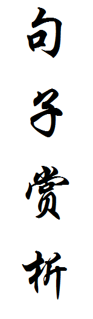

1、宇宙就是一座黑暗森林，每个文明都是带枪的猎人，像幽灵般潜行于林间，轻轻拨开挡路的树枝，竭力不让脚步发出一点儿声音，连呼吸都小心翼翼...
2、没有永远的敌人或朋友，只有永远的责任。
3、给文明以岁月，而不是给岁月以文明。
4、以前，老觉得自己的作品缺少灵魂，现在才知道，缺的是她。 她像一颗星，总那么遥远，照到我身上的光也是冷的。
5、太空像一面 放大镜，可以在瞬间把人类的阴暗面放到最大……当人类真正流落太空时，极权只需五分钟。
6、在每一个历史断面上，你都能找到一大堆丢失的机遇。
7、地球的生命真的是宇宙中偶然的偶然，宇宙是个空荡荡的大宫殿，人类是这宫殿中唯一的一只小蚂蚁。这想法让我后半辈子有一种很矛盾的心态:有时觉得生命真珍贵，一切重如泰山;有时又觉得人是那么渺小，什么都不值一提。
8、在这个世界里我感到自己是个外人，没得到过多少快乐和幸福，也没得到过多少爱，当然这都是我的错。
9、现在他只能看到星星和墓碑，但这却是两样最能象征永恒的东西。
10、“面壁者所承担的，将是人类历史上最艰难的使命，他们是真正的独行者，将对整个世界甚至整个宇宙，彻底关闭自己的心灵，他们所能倾述和交流的、他们在精神上唯一的依靠，只有他们自己。他们将肩负着这伟大的使命孤独地走过漫长的岁月，在这里，让我代表人类社会向他们表达深深的敬意。”
11、我们都是阴沟里的虫子，但总还是得有人仰望星空。
12、我爱你，与你有何相干？毁灭你，又与你有何相干？
13、给时光以生命，给岁月以文明
14、“宇宙很大，生活更大，也许以后还有缘相见。”
15、越透明的东西越神秘，宇宙本身就是透明的，只要目力能及，你想看多远就看多远，但越看越神秘。
